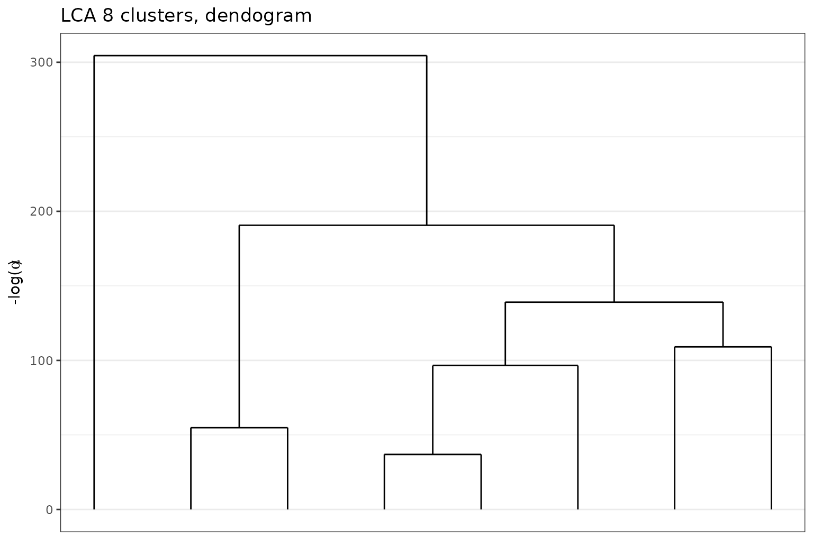
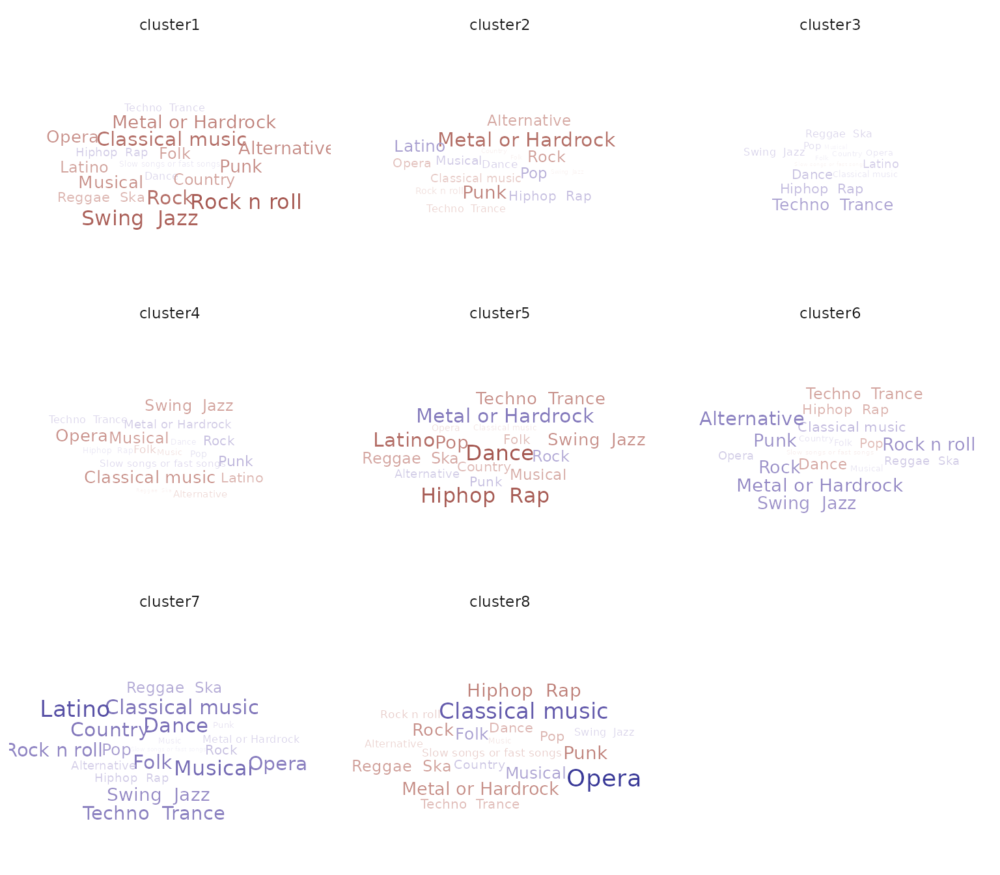

Loads packages.
library(dplyr)
library(stringr)
library(careless)
library(greed)
library(ggplot2)
library(purrr)
library(ggwordcloud)
#https://www.kaggle.com/miroslavsabo/young-people-survey
#survey=read_csv("data-raw/responses.csv")
data("Youngpeoplesurvey")We begin by preprocessing the data, only keeping the categorical variable. The original dataset has \(n=1010\) respondents for \(p=150\).
nc = 19
selected = Youngpeoplesurvey %>%
select(all_of(1:nc)) %>%
mutate(string = longstring(.)) %>%
mutate(sel = if_else(string <= 10,TRUE,FALSE) ) %>% pull(sel)
Xnum = Youngpeoplesurvey %>%
select(all_of(1:nc)) %>%
filter(all_of(selected) )
X = Xnum %>%
mutate_all(\(x){factor(x,levels=1:5)}) %>%
droplevels()
X = X[rowSums(is.na(X))==0,]
set.seed(31)
library(future)
plan(multisession)
sol=greed(X,alg=Seed(),K=10)
#> ------- LCA model fitting ------
#> [1] "clean ok"
#> ------- Final clustering -------
#> ICL clustering with a LCA model, 8 clusters and an icl of -24711.
plot(sol,type='tree')
table(clustering(sol))
#>
#> 1 2 3 4 5 6 7 8
#> 126 136 186 89 80 196 51 59
params = coef(sol)
means_scores = lapply(params$Thetak,\(x){apply(x,1,\(r){sum(r*as.numeric(names(r)))})})
means_scores_long = do.call(rbind,map2(means_scores,names(means_scores),\(x,y){tibble(cluster=names(x),mean=x,var=y)})) %>% mutate(var = gsub("\\."," ",var))
means_scores_glob = Xnum %>%
summarise_all(\(x){mean(x,na.rm=TRUE)}) %>%
tidyr::pivot_longer(1:nc,names_to = "var",)%>%
mutate(var = gsub("[,-/]"," ",var))
#> Note: Using an external vector in selections is ambiguous.
#> ℹ Use `all_of(nc)` instead of `nc` to silence this message.
#> ℹ See <https://tidyselect.r-lib.org/reference/faq-external-vector.html>.
#> This message is displayed once per session.
gg = means_scores_long %>%
left_join(means_scores_glob) %>%
mutate(dm=mean-value)
#> Joining, by = "var"
ggplot(gg %>% filter(abs(dm)>0.1), aes(label = var, size = abs(dm),color=dm)) +
geom_text_wordcloud() +
scale_size_area(max_size = 5) +
theme_minimal() +
scale_color_gradient2(guide="none")+
facet_wrap(~cluster)